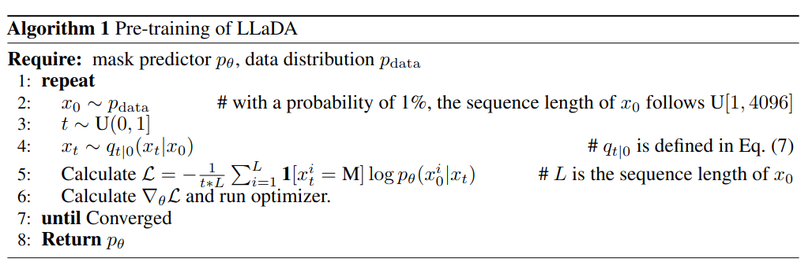
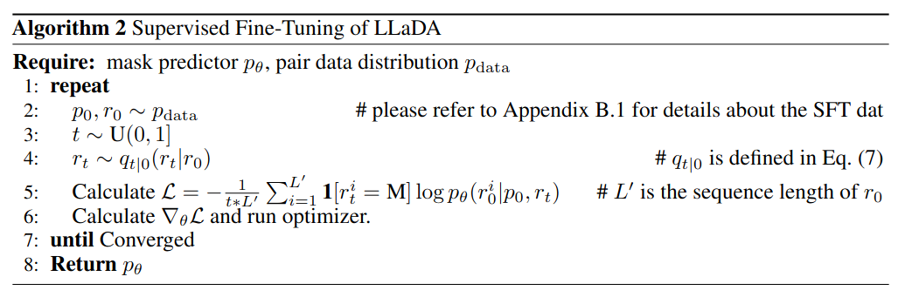

现在的大语言模型是变分自回归模型，这篇文章提出了通过生成扩散的过程训练大语言模型(Large Language Diffusion with mAsking, LLaDA)。并通过实验验证模型能力，同时证明LLM的能力并非依赖变分自回归训练机制。
Reference: * Large Language Diffusion Models * Code
文章核心是提出了LLM扩散训练方法，改变了之前仅仅依靠变分自回归的训练方式。可以想到的核心问题： 1. 扩散训练方式是什么？ 2. 通过什么指标，在哪些任务上与经典模型对比？
Diffusion
首先从理论上证明变分与自回归在理论上等价： maxθ𝔼pdata(x)log pθ(x) ⇔ minθKL(pdata(x)||pθ(x))
扩散的训练目标是在数据的期望上，模型的概率期望分布最小；而变分训练的目标是目标分布与变分分布的KL散度最小。
训练
训练阶段与经典的自回归过程一致，分为预训练与微调两阶段。在(a)图中为模型预训练过程，在文本中随机遮盖一部分token，遮盖的概率为U[0, 1]；(b)图为模型的微调过程，只有回答的部分进行遮盖；(c)图为采样过程（推理过程），其中扩散过程从t = 1（完全遮盖）到t = 0（无遮盖）过程。
 
采样过程与扩散模型在图片中应用一致，逐步减去遮盖，使用交叉熵作为损失函数： $$\mathcal{L}(\theta) \triangleq - \mathbb{E}_{t, x_0, x_t} \left[\frac{1}{t} \sum_{ i = 1 }^L \textbf{1}[x_t^i = \textrm{M}] \log p_{\theta}(x_0^i|x_t) \right]$$ 其中x0为训练集采样的点，t ∈ [0, 1]的随机变量，xt是模型前向传播采样的点，其中1确保只计算遮盖的点。
推理
首先给予prompt——p0，然后离散化恢复过程，从全遮盖模型中采样。采样的步数是一个速度与质量取舍的超参。中间步骤将之前生成的rt与p0同时输入，计算pθ(rt + 1|p0, rt)，给出遮盖的部分。同时计算如下期望以消除偏差，让模型持续处于正确的路上：
$$ -\mathbb{E}_{l, r_0, r_l} \left[\frac{L}{l} \sum_{i=1}^L \textbf{1}[r_l^i = \textrm{M}] \log p_{\theta}(r_0^i|p_0, r_l) \right]$$
实验
实际效果比较一般，作者同样承认这篇文章的贡献主要在于新的训练方法。
总结
这篇文章想要说明自己提供了扩散+语言模型的想法，实际上作者还是使用自回归+Bert的构思。创新点在与采用动态的掩码设计，与Bert固定掩码不同。
文章中没有体现出，扩散模型连续的性质，实际上还是离散自回归的思路。